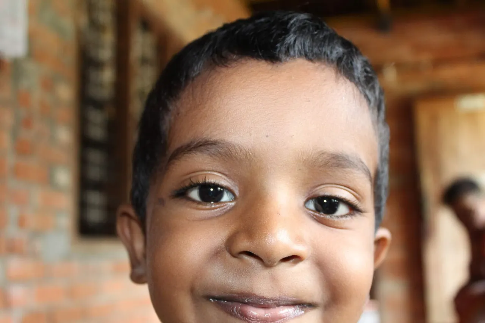
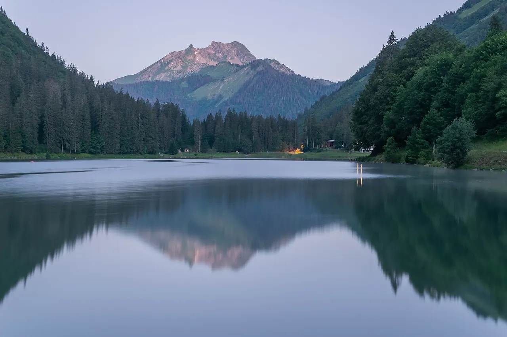

La photo, en jouant.
Cinq leçons de quelques minutes. Tu bouges les réglages, tu vois le résultat, et un mini-quiz vérifie que c'est acquis.
Trois réglages font la lumière.
Chacun a un effet secondaire : l'ouverture floute le fond, la vitesse fige ou laisse filer le mouvement, les ISO ajoutent du grain. Essaie.
Simulation pédagogique : effets accentués pour être visibles.
Les valeurs exactes du Z50II
Ouverture : dépend de l'objectif. Avec le NIKKOR Z DX 16–50 mm f/3.5–6.3 VR, la plus grande ouverture va de f/3.5 (grand-angle) à f/6.3 (zoom).
Vitesse : de 1/4000 s à 30 s, jusqu'à 900 s en mode M avec la plage étendue (réglage d7), plus les poses B et T.
Sensibilité : de 100 à 51 200 ISO, plus des réglages Hi jusqu'à l'équivalent de 204 800 ISO. La réduction du bruit ISO atténue le grain.
Correction d'exposition : maintiens la touche ± et tourne une molette, de −5 à +5 IL en photo. +1 IL, c'est deux fois plus de lumière.
Qui décide : toi, ou l'appareil ?
Tourne le sélecteur de mode (fais-le glisser, ou touche un mode).
Ne plus jamais rater l'œil.
Deux réglages : le mode (quand l'appareil fait le point) et la zone (où). Dis-moi ce que tu photographies.

Les 5 modes de mise au point
AF-S : sujet immobile ; mise au point mémorisée à mi-course ; par défaut, pas de déclenchement si ce n'est pas net.
AF-C : sujet qui bouge ; suivi continu ; par défaut, déclenche même si ce n'est pas encore net.
AF-A : l'appareil choisit entre AF-S et AF-C (photo seulement).
AF-F : suivi permanent, en vidéo seulement.
MF : manuel, à la bague ; la mise en relief (réglage a12) colore ce qui est net.
Quand l'autofocus hésite
Juste d'abord. À ton goût ensuite.
Cette scène est éclairée par des ampoules chaudes, vers 3000 K. Fais glisser jusqu'à ce que le blanc redevienne blanc.
Le style de l'image : Picture Control
Touche dédiée sur le dessus. Il s'applique au JPEG ; sur un RAW, tu peux encore changer d'avis. Touche un style (aperçus indicatifs) :

Jusqu'à 30 images par seconde.
Maintiens la touche de mode de déclenchement et tourne la molette principale. Choisis un mode : les barres montrent une seconde de rafale.
Cadences maximales mesurées par Nikon, variables selon la qualité d'image et le type d'obturateur. Avec le flash intégré : une photo par appui. Pour C15/C30, Nikon recommande une carte UHS de classe 3 d'au moins 250 Mo/s.